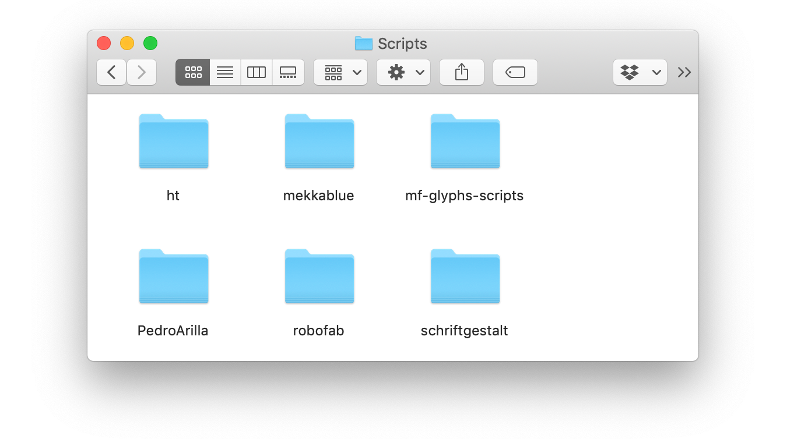
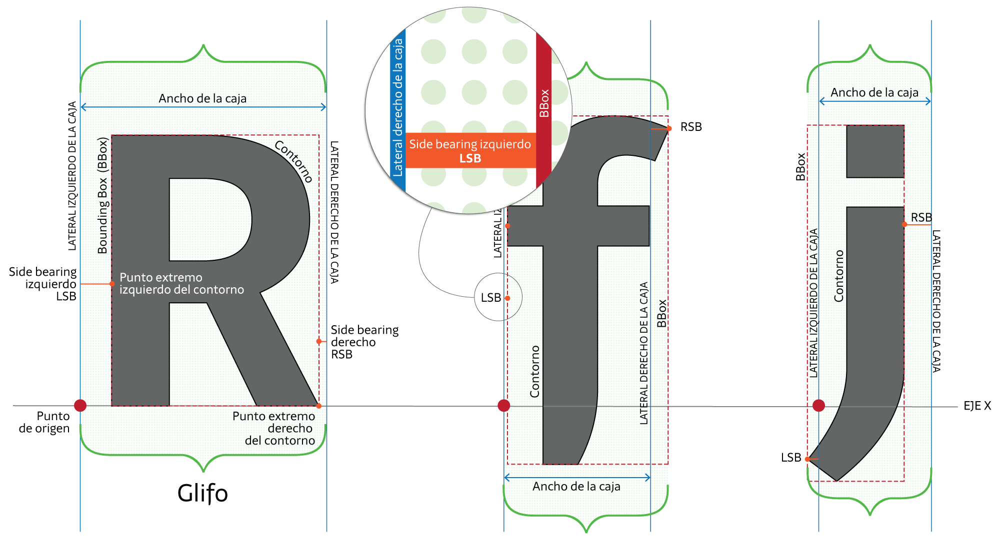
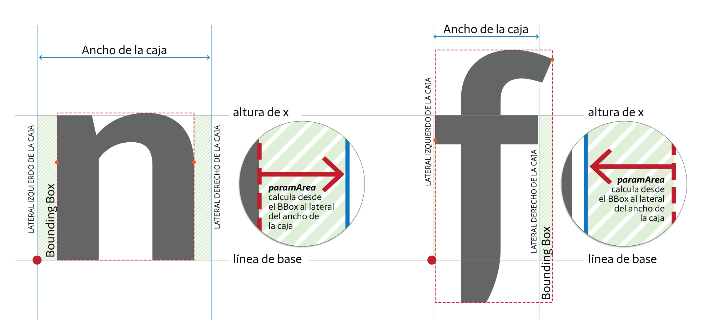
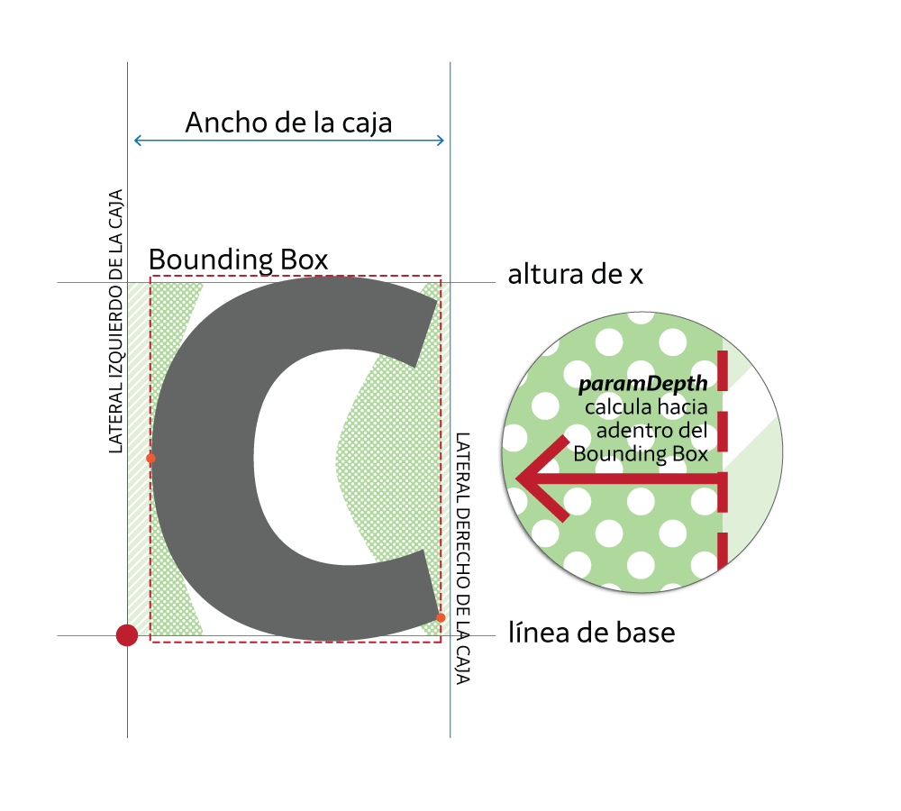
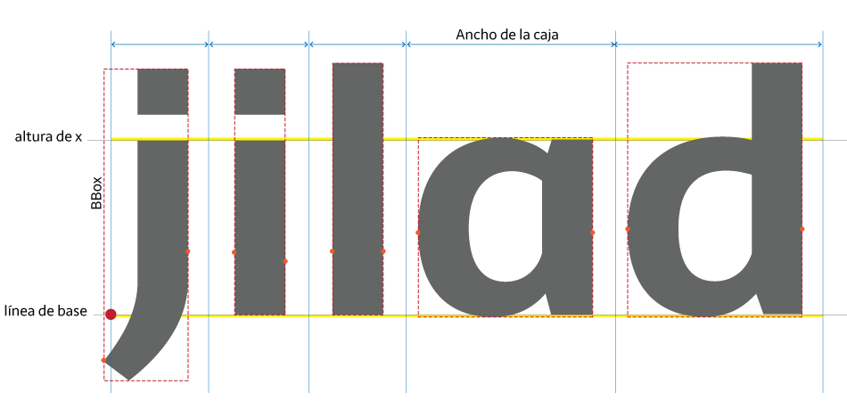

Lo primero que deberías saber es que HT Letterspacer no es una «varita mágica», no reemplaza al diseñador, el HT Letterspacer es una herramienta y como tal debes aprender a utilizarla, debes aprender a configurar sus parámetros generales y debes aprender a modificar el archivo de configuración externa, en resumen, debes aprender a pensar el espaciado a través de esta nueva perspectiva y en este sentido estás frente a un cambio de paradigma, pues el espaciador propone un nuevo método.
Al diseñar una letra, diseñas el negro y el blanco, el trazo y el espacio que lo rodea.
Esta herramienta propone un método para pesar, diseñar y definir el espacio a la izquierda y a la derecha de un signo utilizando un grupo de parámetros generales que luego son ajustados en un archivo de configuración.
El espaciado es una cuestión de diseño, los diseñadores de tipografía diseñamos el blanco que rodea a un signo, esas decisiones son afectadas por la forma y contraforma, el dibujo, las proporciones, el estilo, la función, el soporte y los demás items descriptos en su brief.
Esta es una herramienta para diseñadores, no hay parámetros mágicos, hay un diseñador de tipografía con un brief que le marca el norte, el HT Letterspacer le permite realizar pruebas y experimentar diferentes posibilidades hasta lograr el espaciado que su tipografía requiere.
Paso 1: Descarga e instalación
Para comezar, descarga HT Letterspacer nuestro sitio web. Debes tener la aplicación Glyph instalada, pues esta herramienta es un script de python que corre en este editor de fuentes.
Una vez descargada la carpeta HTLetterspacer debes abrir la aplicación Glyphs y seguir los siguientes pasos:
1. Abrir las preferencias de Glyphs, Menú > Glyphs > Preferencias (o Cmd⌘,), en la ventana de preferencias, ir a la sección Addons > Modules y hacer click en Install Modules.
2. Ir al menú Script > Abrir la carpeta de Scripts ( o Cmd⌘Shift⇧Y) y cerrar la aplicación Glyphs. Se abrirá en el escritorio la carpeta donde Glyphs guarda los scripts.

En esta carpeta podrás encontrar los scripts que ya tienes instalados, o si no has intalado ninguno, una carpeta vacía.
3. Colocar aquí la carpeta HTLetterspacer que descargaste de GitHub.
4. Volver a Glyphs e ir al menú Script presionando la tecla Opt ⌥, de esta manera al desplegar el menú en lugar de abrir ventana de scripts ahora podrás ver al final la opción Reload Scripts, esta acción actualizará dicha carpeta y podrás ver entre las opciones de scripts, HTLetterspacer.
(o puedes acutalizar la carpeta de script precionando Cmd⌘Opt⌥Schift⇧Y.
5. Opcional: cuando ya estés trabajando con el HT Letterspacer puedes utilizar un glifo de prueba llamado _areas, para esto deberías descargar objectsGS.py y GSPen.py del repositorio de Glyphs-Scripts y ponerlos en la carpeta Scripts (similar a lo que hiciste en los puntos anteriores). Estos scripts siven para generar ese glifo _areas.
Paso 2: Utilización inicial del HT Letterspacer
Has empezado a diseñar nuestra fuente tipográfica, ya tienes un par de signos, por ejemplo una n, una o, una v, una c y ahora debes diseñar el blanco que los rodea, o sea, el espaciado. Aquí es donde comienzas a utilizar esta herramienta de espaciado.
Pero antes debes resolver un pequeño asunto. La primera vez que accedas al menú script > HTLetterspacer y se desplieguen las 2 opciones: HTLetterspacer UI y HTLeterspacer, antes que puedas elegir una de ellas se abrirá una ventana de diálogo indicando que falta un archivo de configuración y preguntando si queremos crearlo, recomiendo responder Yes!
De esta manera se genera automáticamente un archivo .py en la misma carpeta donde has guardado el archivo mifuente.glyph. Si vas a esa carpeta encontrarás un nuevo archivo llamado elnombredetufuente_autospace.py, este era el archivo de configuración faltante, hablaremos de él más adelante.
Paso 3: Aproximación al diseño de espaciado.
En esta sección hablaré de diseño de espaciado propiamente dicho y de cómo utilizar el HT Letterspacer para espaciar una fuente tipográfica.
Pero antes quisiera hacer una breve introducción para ponernos a todos en el mismo punto de partida y evitar malentendidos, ambigüedad o desencuentros semánticos.
Quiero definir los siguientes puntos:
¿Qué es espaciado?
¿Qué factores podríamos considerar relevantes en la toma de partido del diseño del espaciado de una fuente?
¿Qué actores intervienen durante el proceso de espaciado?
¿Cómo estos actores están reflejados en los parámetros que HT Letterspacer propone?
La novedad de esta herramienta es que nos desafía a pensar y a analizar el espaciado de una forma diferente, tal vez esto es lo que nos desorienta un poco en los primeros momentos. No es un botón mágico que arregla todo.
Espaciar es determinar cuánto espacio hay a la derecha y a la izquierda de un signo, cuánto aire lo rodea, es diseñar el blanco que nos deja leer el negro. Espaciar es equilibrar el espacio que hay dentro de la letra con el espacio que hay fuera de ella.
En este punto estamos todos más o menos de acuerdo, si hemos leímos sobre espaciado, la idea de igualar blancos internos-externos es recurrente. La imagen utilizada es similar: si para llenar el interior de una n necesito 1 litro de agua, también necesitaré 1 litro para llenar el espacio entre esa n y la letra que sigue. La gran pregunta es ¿es un litro, 0,8 o 1,2 litro?
Los métodos de espaciado propuestos por Walter Tracy, Thomas Phinney, Frank E. Blokland, ponen el foco en las formas, agrupandolas, clasificándolas, analizandolas —rectas, curvas, diagonales, bastones, etcétera—.
HT Letterspacer propone observar el blanco, no se basa en la forma, la atención apunta al espacio y nos anima a mirarlo como una forma maleable, pues tenemos que determinar dónde empieza y termina ese blanco para dar lugar al negro.
Criterios de diseño:
Al empezar a pensar en rasgos generales cómo será el espaciado de una fuente, hay algunos datos que van a ir perfilando esa forma (blanca) estos ítem influyen en la toma de decisión. Por ejemplo, si tengo dos tipografías sans Serif para cuerpo de lectura, una en papel y otra en pantalla, la segunda tendrá un espaciado más generoso que la primera; o si tengo una tipografía para títulos y su variante de texto, la primera tendrá un espaciado más apretado. Hay factores que pueden ser un criterio de diseño:
diseño de los signos
proporciones
color
función
soporte
etc.
Los actores que intervienen técnicamente son:
Cuando ya sabes que tipo de espaciado demanda tu tipografía y quieres utilizar el espaciador, hay un par de conceptos que necesitas conocer, de la misma manera que para dibujar un signo en un editor de tipografía sabes como funcionan las curvas de Bézier, los manejadores y los nodos.
En el diseño de espaciado, los actores principales que intervienen son:
sidebearing (izquierdo y derecho)
contorno del glifo
bbox
ancho de caja
Mini glosario general:
«El espacio es lo que ocurre entre el límite de la caja y el contorno.»
El punto de origen es el punto cero en el eje x.
El ancho de la caja—Advance width— es el ancho que avanza el signo, el límite izquierdo es el punto de origen (que coincide con el sidebearing izquierdo) y el límite derecho es el sidebearing derecho. El ancho de caja está delimitado por lo laterales izquierdo y derecho, lo que ocurre entre estos laterales es ancho. Generalmente el ancho de caja es mayor a cero.
Cuando hablo de glifo, hago referencia al dibujo (a la forma, al negro) y al espacio que lo rodea.
Cuando hablo del contorno hago referencia a la línea que dibuja la forma y contraforma, a la línea que dibuja el negro.
Los puntos extremos del contorno determinan el Bouding Box - BBox. Dicho de otro modo, el BBox es el rectángulo que circunscribe al contorno.
Sidebearing es el componente esencial del espaciado, es el espacio a la izquierda y a la derecha. Cada glifo tiene un sidebearing izquierdo llamado Left Side Bearing - LSB y un sidebearing derecho, Right Side Bearing - RSB:
LSB es la distancia entre el punto de origen y el lado izquierdo del BBox.
RSB es la distancia entre el lado derecho del BBox y el lateral derecho de la caja.

Definición de los parámetros generales
Para definir los parámetros recomiendo utilizar primero la ventana emergente HT Letterspacer UI (User Interface). Allí están los parámetros que debemos definir para diseñar el espaciado de nuestra tipografía.
1. LBS / RSBSidebearings izquierdo y derecho. Con este parámetro indicas si el espacio debe ocurrir a la izquierda y a la derecha del signo o solo a un lado.
2. Tabular Este apartado está reservado para las figuras tabuladas y una fuente monoespaciada o de ancho fijo. Si tildas este parámetro, debes indicar cuál es el ancho de la caja.

3. Area paramArea Este parámetro define el área a la izquierda y la derecha del BoudingBox, la superficie rectangular entre el lado izquierdo (o derecho) del BoudingBox y el lateral izquierdo (o derecho) de caja, la línea base y la altura de x. El número que utilices para definir el valor de este parámetro está entre 0 y 1000, para una tipografía de texto podría ser entre 200 y 400.

4. Depth paramDepth (profunidad) Si todos los signos fueran rectos como el lado izquierdo de la n sans Serif geométrica el asunto del espaciado estaría resuelto y no estaríamos aquí discutiendo esto. ¿Qué ocurre con las contraformas abiertas, con las zonas blancas que están dentro del BBox y por lo tanto no son tomadas en cuenta en el parámetro área? ¿Cómo definimos las superficies blancas en una c, en una v o una T? ¿Hasta dónde es contraforma y donde empieza a ser espaciado?
Hay una gran cantidad de blanco dentro del BBox que incide en la ecualización del espacio. Para definir este parámetro es imprescindible un ojo bien entrenado, pues necesitamos determinar una frontera visual, no hay ningún punto o línea que nos indique en qué momento el blanco interno de una c deja de ser espacio interior para ser espacio exterior, o en qué lugar, nuestro ojo deja de ver al espacio inferior de la v como contraforma para verlo como espaciado.
El número que utilizamos aquí es un porcentaje (una escala 0-100), e indica cuánto blanco debe medir hacia adentro del BBox, entre la línea de base y la altura de x. Para una tipografía de texto estándar puede ser entre 10 y 25.

5. Overshoot paramOver En los dos parámetros anteriores (area y depth) el cálculo es dentro de la altura de x. Este parámetro expande el espacio medible hacia arriba y hacia abajo de la altura de x. Al considerar el espacio fuera de la altura de x, podemos establecer diferencias en el espaciado de una i sans, una l y una j, de una a de anillo, una d y una q. El uso de este parámetro aumenta la posibilidad de afinar el seteo del HT Letterspacer y optimizar el resultado final. El valor de este parámetro suele ser similar al valor de overshoot de la fuente.
Entonces una vez que sabes que parámetro calcula qué blanco, puedes ir probando/experimentando rápidamente desde esta ventana diferentes valores hasta lograr el espaciado que quieres para tu tipografía.
Personalmente comienzo con una secuencia de n para definir el parámetro área, luego incorporo la o y empiezo a ver el valor del parámetro depth agregando la c, la v y sigo afinando el ajuste, por último, veo que ocurre con i, j y l para definir el parámetro overshoot. La secuencia se va transformando en palabras y frases que me permiten ajustar los detalles para revisar que el resultado me agrade.
Como ya te habrás dado cuenta, esto no es simple, cuando crees haber encontrado el valor de paramArea agregas una v a la secuencia y todo se desacomoda, logras hallar el valor de paramDepth pero al agregar una f vuelve a desajustarse, modificas `paramArea` luego paramOver y reconsideras el valor de paramDepth. En este punto es importante saber qué modificas con cada parámetro, sino esto se vuelve realmente una lotería.
El testeo lo hago con las minúsculas. Las mayúsculas, figuras, símbolos, etc. tendrán un espaciado parejo y armónico con estos valores, pero no óptimo, en el paso 5, podrás resolver esto.
Otro punto importante de recordar es que si estás trabajando en una fuente que tiene un par de másters y cargas los valores para el máster light, luego vas al bold y cambias los valores para hacer pruebas allí, al volver al máster light, los valores que habías seteado serán los que cambiaste en el bold. Los valores en la ventana HT Letterspacer UI no quedan guardados, es una instancia de prueba. Recomiendo trabajar en un máster a la vez e ir pasando los parámetros al máster correspondiente.
Cómo pasar los valores a cada máster
Una vez definidos los valores en la ventana emergente, debes cargarlos en el máster correspondiente, esto es bastante simple.
En la ventana donde vienes trabajando haces click en copy parameters y vas a Información de la fuente > Máster allí encontrarás una sección para los Parámetros personalizados, en ese lugar debes pegarlos.
También puedes anotar los valores, ir a la sección Parámetros personalizados y tipear en la columna propiedades paramAreaparamDepthparamOver y en la columna valor el número corresponiente según los resultados de las pruebas realizadas.
Resumen
Es importante recordar que para aplicar el espaciador los glifos deben estar seleccionados.
Saber que parámetro corresponde a cada blanco te evitará trabajar a ciegas y jugar a la lotería.
La ventana NO GUARDA los valores.
Pasar los parámetros generales al máster.
Los parámetros generales se calculan contrastando minúsuclas, el resto de los signos tendrán un espaciado parejo o constante. Podrás ajustar esto en el paso 5.
Paso 4: Aplicar el HT Letterspacer a toda la fuente
Ahora que ya están los parametros de espaciado copiados en cada máster, puedes hacer correr el macro en toda la fuente, seleccionas todos los glifos y vas al menú script > HTLetterspacer > HTLetterspacer
Esto deberás repetirlo por cada máster e ir revisando los resultados. Si necesitas modificar alguno de los valores, puedes hacerlo desde la ventana Información de la fuente > Máster o volver a trabajar con la ventana emergente, esto último es lo más ágil.
Paso 5: Parámetros y archivo de configuración
Como ya habrás advertido los parámetros generales logran un espaciado que se ajusta a las minúsculas pero las mayúsculas están armónicamente apretadas.
En el paso 2 se generó un archivo de configuración, este archivo contiene las instrucciones para resolver este problema y ajustar los parámetros generales a las necesidades particulares de cada grupo de signos.
Encontrarás este archivo en la misma carpeta donde está guardado el archivo de la fuente, se llama igual a ella más la extención _autospace.py. Al abrirlo con un editor de texto encontrás los siguiente:
Si bien este archivo ya tiene una serie de valores estándar que funcionan más o menos bien, la idea es que puedas personalizarlo y ajustarlo a tus necesidades.
De la misma manera que para ajustar los parámetros generales fueron definidos a los actores que intervienen (LBS, RBS, ancho de caja, etc.) aquí lo que debes aprender es a leer e interpretar este archivo para poder modificarlo a tu gusto.
En las primeras dos líneas se presenta comentado el esqueleto del documento (el # introduce un comentario sin valor de instrucción), esta secuencia se repite en los 5 grupos que el archivo tiene definidos por default.
Los parámetros que declara son los siguientes:
Script: indica el sistema de escritura que afecta —latin, devanagari, cirílico, etc.— si usas * indicas que afecta a todos los scripts.
Category: indica qué categoría de signos —letters, numbers, punctuation, symbols— o * que incluye a todas las categorías.
Subcategory: describe las subcategorías, si la categoría es letters aquí podría ser Uppercase, Lowercase, LigatureSmall Caps y Superscript o * que incluye a todas las subcategorías.
value: es el valor del coeficiente por el cual se multiplica el espacio definido en los parámetros generales. Si utilizas como valor 1 los valores indicados en paramAreaparamDepth y paramOver serán aplicados sin modificación por lo tanto en la categoría letters subcategoría lowercase el valor que corresponde es 1, para la subcategoría uppercase y Small caps como el espaciado debe ser más amplio será un valor mayor a 1 y para la Superscript será un valor menor a 1.
referenceGlyph: este signo de referencia es el que determina la altura de x, el límite vertical de los parámetros generales, en las minúsculas sería una x en las mayúsculas sería una H. Es importante tenerlo en cuenta para las letras o números volados, pues estos signos se desarrollan casi en su totalidad fuera de la altura de x, entonces en la subcategoria Superscript el signo de referencia debería ser x.susp
filter: aquí puedes especificar un grupo de glifos según su nombre o extensión, por ejemplo .ss01 o sencillamente * que designa a todos los nombres.
Es importante mencionar que no es posible excluir signos, no puedes establecer excepciones.
Una solución posible a esta situación es es no seleccionarlos en el archivo .glyphs cuando pasas el espaciador.
Otra opción es, en lugar de pensarlo desde la excepción, incluirlo en esa situación a través de un filtro y transformarlo en una particularidad dentro de una categoría/subcategoría.
#Numeros Romanos
Latin,Letter,Lowercase,1.5,RomanNumbersHight,.ss02,
Por ejemplo, deseo espaciar los números romanos, pero el espaciador toma las barras superior e inferior y no aplica el espaciado. Entonces:
Latin sistema de escritura.
Letter categoría.
Lowercase subcategoría.
1 valor.
RomanNumbersHight Glifo de referencia, genero este glifo de referencia que redefine la altura de x.
ss02 Filtro, aquí es donde la excepción es incluida como particularidad dentro de un grupo, los ss02.
Observa la primera línea, donde el valor del parámetro filter es *, y en la segunda línea el valor E. Esto se lee: todas las mayúsculas usarán la letra H como referencia, y aplicará a todas las mayúsculas el coeficiente 1.25, pero en la segunda línea hay una nueva nueva regla que indica que para el filtro E el coeficiente será 1.4.
Creo que la clave para aprovechar al máximo las posibilidades de ajuste está en el sistema de categorías y subcategorías, filtros y referencias.
Una fuente es un sistema que contiene subsistemas, cada diseñador piensa sus categorías y subcategorías de manera que lo ayuden a ordenar el trabajo, a establecer una metodología, a definir criterios y fronteras.